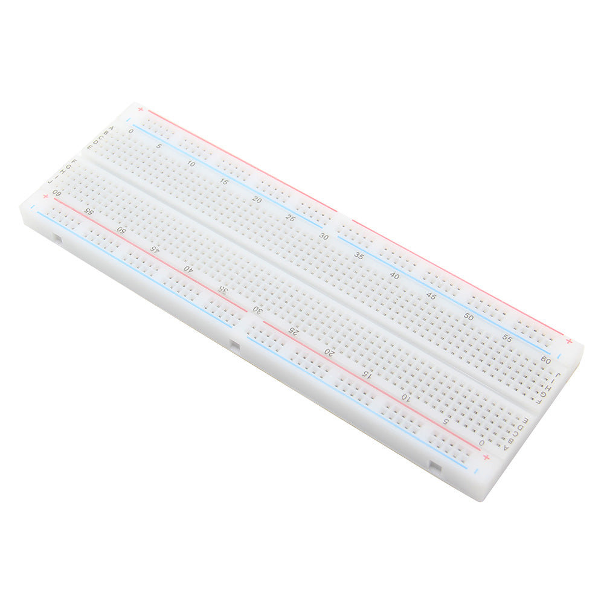
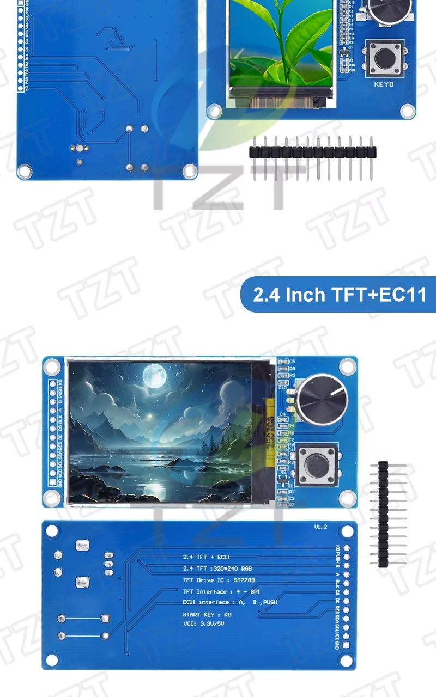

רכיבים מומלצים לתלמידים
בחרו חבילה כדי לראות את כל הרכיבים בתצוגה חזותית.

בקרים והרחבות
4 רכיבים

בסיס מומלץ
2 רכיבים

חיישנים מומלצים
5 רכיבים

אודי ממליץ בחום
3 רכיבים
בחרו חבילה כדי לראות את כל הרכיבים בתצוגה חזותית.
4 רכיבים

2 רכיבים
5 רכיבים

3 רכיבים